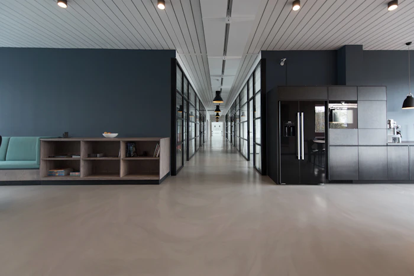

Institutions in Service
Reimagining Public Administration
for Modern Civil Society.
STACKLY Government Services was founded on a fundamental conviction: public service must be as transparent, agile, and accessible as the digital tools citizens rely on every day.
Institutional Overview
A Unified Portal for Every Resident
STACKLY serves as the digital front door to municipal, regional, and national administration. We bring together vital records, commercial licensing, tax processing, and social assistance into a cohesive ecosystem.
Rather than navigating fragmented bureaucratic agencies with conflicting requirements, citizens and business leaders access a single, verified civic identity that handles authentication across all public departments seamlessly.
Core Driver
Our Guiding Purpose
We exist to eliminate administrative friction so communities can flourish with dignity and speed.
Protecting Citizen Time
We respect the hours of our residents. By cutting processing times from weeks to minutes, we return valuable hours to families and business owners.
Ensuring Civic Equity
Public administration must serve every resident equally. Our intuitive interfaces and accessibility tools guarantee no citizen is left behind.
Restoring Trust
Transparent real-time status tracking and cryptographically signed audit logs build enduring institutional confidence between citizen and state.

Strategic Horizon
Digital Government Vision 2030
We envision a fully connected civic fabric where routine government interactions happen proactively before paperwork is even filed.
From automated child support registrations upon birth registration to instant business license extensions triggered by compliant audit records, our vision is predictive, respectful, and automated governance.
- check_circle Proactive civic assistance triggered by life events
- check_circle Universal digital citizen credential wallets
- check_circle 100% paperless municipal operations
Our Constitutional Mandate
A Clear Mission to Serve with Integrity
“To provide every citizen, business, and visitor with secure, frictionless, and transparent digital access to all public services — upholding the highest standards of democratic accountability, data sovereignty, and universal accessibility.”
User-Experience Design
A Citizen-Centered Design Philosophy
Government forms used to be written for bureaucrats. STACKLY forms are written for real people dealing with real life circumstances.
Every user interaction is rigorously tested with diverse demographic groups — ensuring that our digital portal operates flawlessly regardless of tech literacy, age, language preference, or network bandwidth.
Platform Engineering
Technology & Digital Innovation
Built on modern high-availability infrastructure with continuous automated replication across geographically redundant secure data zones.
STACKLY integrates automated cryptographic hashing, microservice-based inter-agency APIs, and automated SLA monitors that ensure uninterrupted public service availability during emergency events or civic traffic surges.
Guaranteed Privacy
Security & Public Transparency
We believe trust is earned through total accountability and uncompromised cryptographic protection.
End-to-End Encryption
All in-flight and at-rest citizen communications are encrypted using AES-256 and TLS 1.3 military-grade standards.
Immutable Audit Log
Every time an official accesses a civic document, the event is permanently logged with an immutable audit hash.
Zero Data Monetization
Citizen data is never shared, marketed, or brokered. It remains strictly sovereign property of the citizen.
Join Modern Governance
Experience Transparent Government in Action.
Create your verified citizen account today or get in touch with our public administration team to learn more.